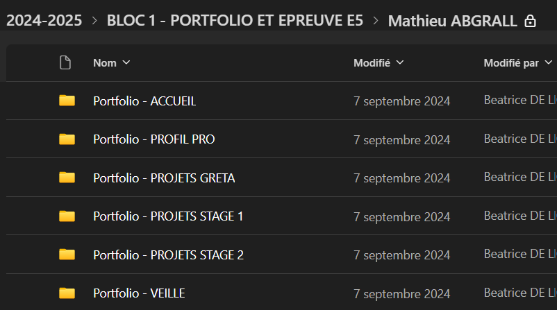
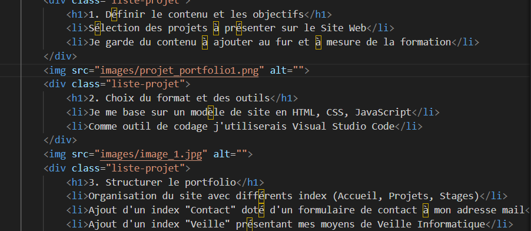
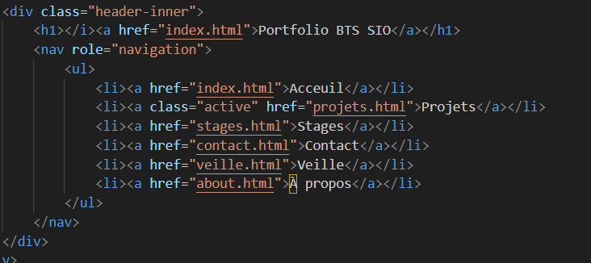
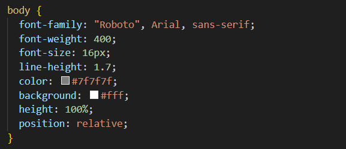
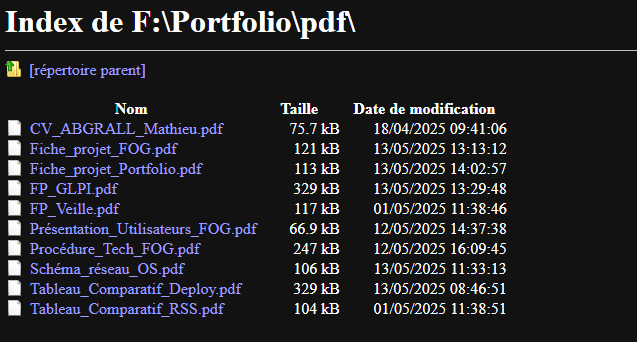

Présentation de mon projet de portfolio web – BTS SIO
Dans le cadre de mon BTS Services Informatiques aux Organisations (SIO),
j’ai réalisé un portfolio web afin de valoriser mon parcours,
mes compétences et mes projets. Ce portfolio a pour objectif de
présenter de manière professionnelle mes réalisations effectuées
pendant la formation, aussi bien lors des cours que durant mes
stages et projets personnels.
Ce site web me permet de démontrer concrètement mes savoir-faire,
d’illustrer ma progression et de me différencier auprès des
recruteurs ou pour la poursuite d’études, et met en avant la pratique,
essentielle dans le BTS SIO
1. Définir le contenu et les objectifs
Sélection des projets à présenter sur le Site Web
Je garde du contenu à ajouter au fur et à mesure de la formation

2. Choix du format et des outils
Je me base sur un modèle de site en HTML, CSS, JavaScript
Comme outil de codage j'utiliserais Visual Studio Code

3. Structurer le portfolio
Organisation du site avec différents index (Accueil, Projets, Stages)
Ajout d'un index Contact doté d'un formulaire de contact à mon adresse mail
Ajout d'un index Veille présentant mes moyens de Veille Informatique
Ajout d'un index A propos disposant de mon CV et me présentant rapidement

4. Personnalisation du design
J'adapte la police et les couleurs jusqu'à un résultat qui me convienne
Ajout d'images et îcones pour améliorer l'aspect visuel

5. Intégration et présentation des travaux
Création d'un Template à utiliser pour les différentes pages de projet
Remplissage des pages Projets en fournissant les documents techniques et Étapes de réalisation

6. Choix d'hébergement principal et secondaire
Le premier choix d'hébergement sera sur le site Alwaysdata.net
Le deuxième choix sera sur github.com